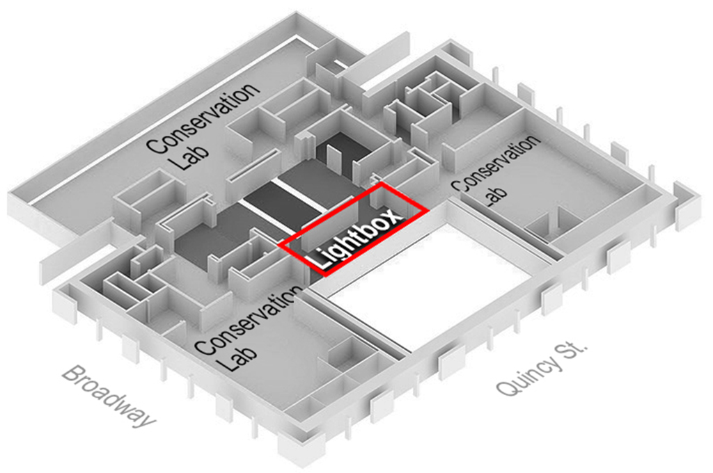
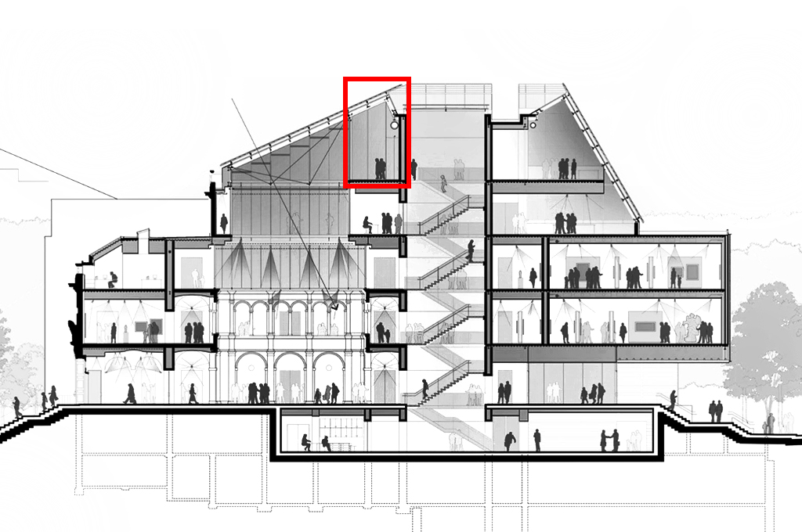

Introduction: The Lightbox Gallery
The Lightbox Gallery is a venue for digital experimentation —a space for projects that respond to the museums’ collections through new media and emerging technologies. Developed in collaboration with faculty, staff, students, and visiting artists, the projects showcased here use digital tools to reveal connections between objects and to play with traditional forms of display. Some of these projects are responsive, allowing users to navigate and manipulate the collections; others are cinematic, transforming the museums into a landscape of digital performance. Exploration in the Lightbox is cross-disciplinary, merging a gallery experience with a digital lab.


Instructions of the Frameworks
On View
(In)visible: Light in Astronomy and Art Conservation.
Art Case Study 1 — Vincent van Gogh’s Three Pairs of Shoes. Press the right/left arrow key to move the slider; Press the up arrow key to toggle teh annotation; Press the Enter key to go back to the menu.
1. APPC
American Professional Photographer Collection in the Harvard Art Museums. Non-interactive.
2. HAM Archives
Harvard Art Museums Archives. Non-interactive.
3. Anthro 1650
Thinking with Collections. Press t/y/u/b/n/m key to hear each of the six student talk about their research.
4. Feke
A painting viewer for Robert Feke's Isaac Royall and His Family. Press the enter key to switch between the visble light photograph and x-radiograph; Press the up/down arrow key to change the transparency of the visble light photograph.
5. Painting x 3
Imaging Unseen Layers in Paintings. Press the left/right arrow key to select a painting; Press the enter key to make the painting to full screen; Press the left/right arrow key to switch the central image between the visible and the invisible radiation images;Press the up/down arrow key to change the transparency of the visble light photograph;Press the Enter key to go back to the menu page.
6. Vis the Universe
Visualizing the X-Ray Universe. Use the left/right arrow key to navigate differnt images through the slider.
7. The Solar
Seeing the Active Sun: How Scientists View our Nearest Star. Use the left/right arrow key to navigate differnt videos through the slider.
8. Object Map
Use mouse to select an object; Left click to reveal the metadata of the selcted object.
9. WWT
The Worldwide Telescope web app.
10. HAM
The official website of the Harvard Art Museums.
11. Rothko
Representation of MArk Rothko's Harvard Murals. Press the left/right arrow key to view different murals; Press the enter key to toggle the compensation images for the digital restoration.
12. Box in Box
Infinite 3D digital Lightbox Gallery.
Enter Your URL
Copy and paste an URL in the type box to see how the content looks like in the video wall in the Lightbox Gallery.